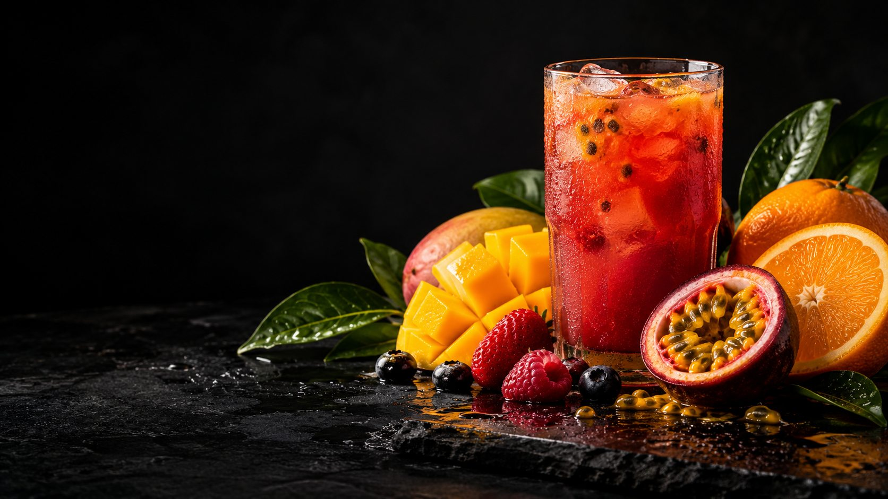
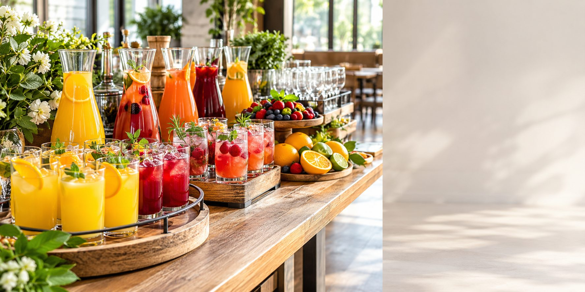

Freshly prepared
Juices proposed to be made from fresh, seasonal fruit.

Fruit forward. Everyday ready.
Fresh flavours. Bright moments.
Pour something brilliant
Fruit-led flavours, composed for the moment in front of you. Start here, then explore the full menu.
See all juices
A LITTLE BRIGHTER, EVERY DAY
This is Watashi
Watashi Juice is a fruit juice business built around a colourful range of flavours and refreshing moments. From a personal pick-me-up to a family table or shared occasion, the brand brings a freshness-focused identity to every glass in Kataza, Nakawa.
Meet the Watashi ideaThe full colour wheel
Three colourful favourites. A world of fresh flavour.
Explore all flavoursJuices proposed to be made from fresh, seasonal fruit.
Classic favourites and playful blends for every mood.
Simple enquiries and local delivery around Nakawa.

For business & occasions
Office treats, café menus, restaurant tables and event refreshment plans deserve an option with personality. Explore juice options for your next event, workplace or special occasion.
Explore Group OrdersHow the order flow could work
Pick your favourite flavour and bottle size.
Send your selected juices and quantities through WhatsApp.
Select MTN Mobile Money or Cash on Delivery.